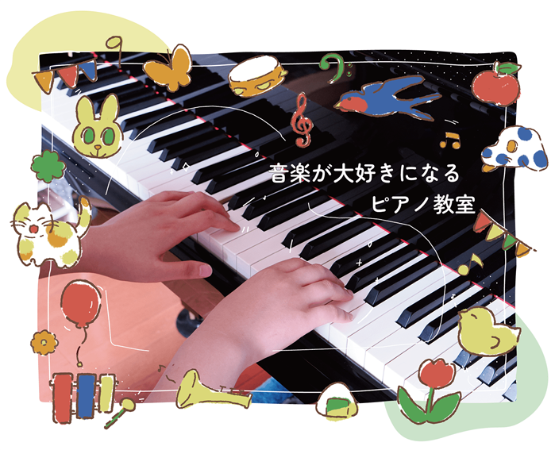
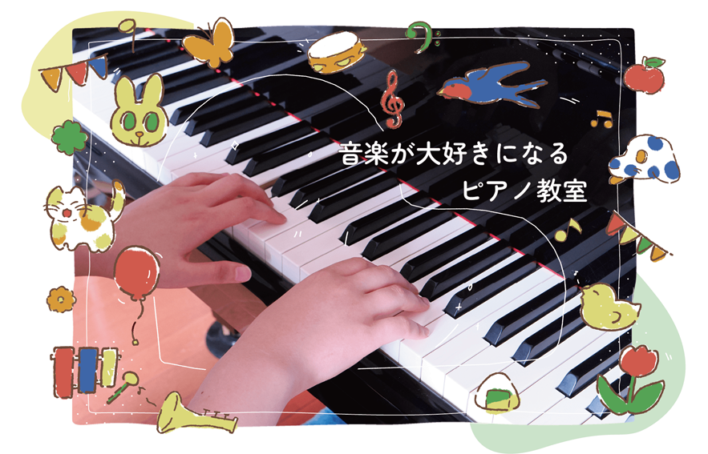

谷川ピアノ教室

仕様言語・ツール
HTML、CSS、Java Script
作成形態
チーム製作・デザイン担当
メインターゲット
小学生のお子さんを持つ親御様
コンセプト
お子様が見て楽しい、親後様も見て楽しいサイトになるようデザインしました。

PC版イメージ

SP版イメージ
クライアント様とのヒアリングから、お子様を中心にレッスンを行っていること、広く生徒さんを募集するのではなく町の小さなピアノ教室として丁寧に教えていること等お聞きし、サイト全体のイメージをチームで作り上げました。
先生が好きとおっしゃっていた「優しい雰囲気」に合わせて先生から感じた「元気さ」もデザインに取り入れました。
メインターゲットから、スマートフォンでのアクセスが多いだろうと考え、ページ構成をわかりやすく、1ページで欲しい情報がなるべく手に入るように作りました。

